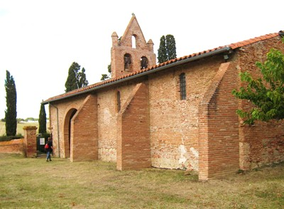
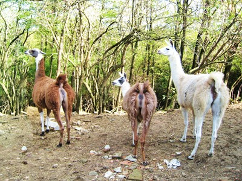
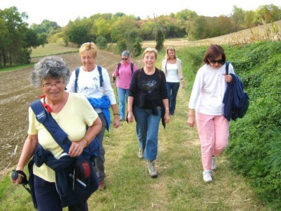

__________________________________
Compte rendu de la sortie du 09/10/2008
Baziège
__________________________________



|
| Liste des participants |
- Jean-Claude Caillat
- Mareth Dalzin
- Catherine Geoffroy
- Guy Geoffroy
- Nicole Laguens
- Robert Pastre
- Sébastien Sanchez
- Anne-Marie Rigal
- Jacques Rigal
- Christiane Saulet |
Lamas, autruches, émeus, singes, kangourous, paon, oui, nous avons vu tout ça.., Pourtant, nous n'étions pas à Sigean, mais quelques kilomètres avant. Baziège, pour qui sait circuler dans ses environs offre tout cela, et bien d'autre choses sans doute. Mais il doit falloir être patient et attendre que ces autres inconnus veuillent bien se montrer, le grillage de ceinture interdisant la traversée. Nous n'étions cependant pas venus au zoo, et nous avons donc marché, sur de très beau chemins, oubliés depuis notre dernière rando sur ce circuit, sauf quelques points caractéristiques qui nous ont rafraîchi la mémoire. JR |
|